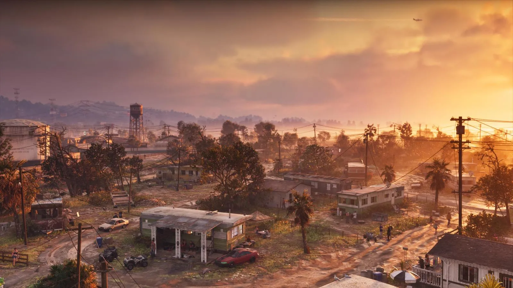
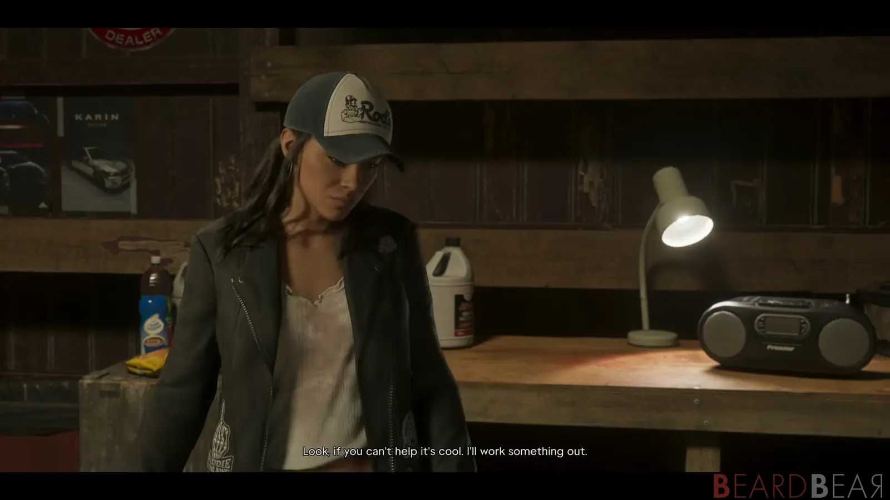
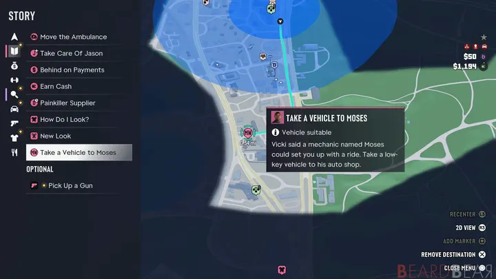
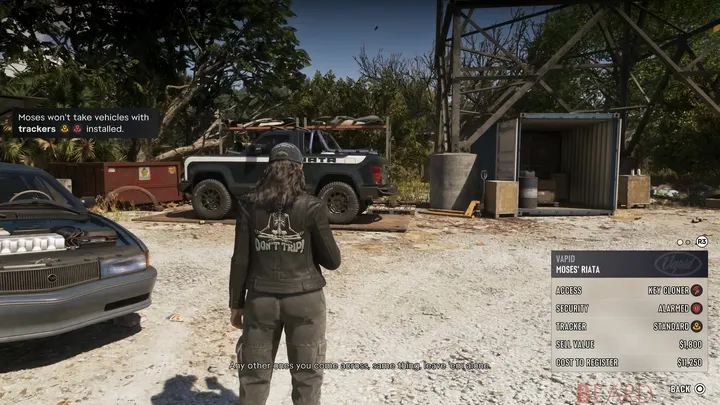
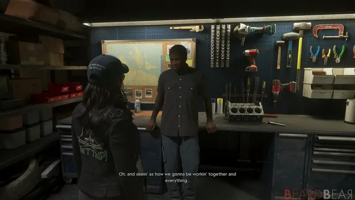
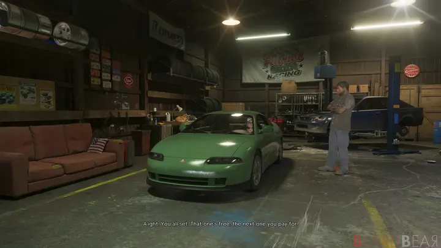
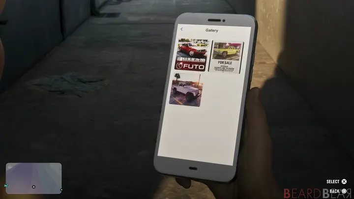

Moses: прохождение миссии GTA 6
Опубликовано:

Коротко
- Ключевая миссия для денег и транспорта: Мозес учит Лусию угонять машины тихо, проверять трекеры и регистрировать угнанное как своё.
- Глава 2, миссия 5 из 11. Играем за: Лусия.
- Награда: слим-джим, приложение Scooter Bros, личная машина Лусии и продажа машин Мозесу.
Миссия коротко
| Глава | 2. Paradise Lost |
| Номер в сюжете | 5 |
| Играем за | Лусия |
| Кто даёт | Мозес |
| Где начинается | гараж Мозеса, Port Gellhorn |
| Условие | Girls’ Trip |
| Награда | слим-джим, приложение Scooter Bros, личная машина Лусии и продажа машин Мозесу |
| Переиграть | нельзя — сохраняйтесь вручную |

Где начинается
Прохождение по шагам
- Заедьте на любой машине в гараж Мозеса — он отведёт во двор к трём машинам.
- Отсканируйте машины WAiNK (зажать ↑, затем R1 / RB). Внизу справа видно: без трекера, стандартный или продвинутый трекер.
- Возьмите слим-джим рядом с Мозесом.
- Вскройте Montagne XL: △ (Y) у двери, затем наклоняйте правый стик, пока полоска не станет розовой.
- Вернитесь в гараж. Машину без трекера можно сразу перекрасить и зарегистрировать. С трекером Мозес отправит за другой.
- Если нужна другая машина — сканируйте машины на главной дороге в центре Port Gellhorn; угнанные рядом с гаражом Мозес не берёт.
- Зарегистрируйте машину: перекраска, затем «Register». Она станет личной машиной Лусии.










Советы
- Дешёвые машины обычно без трекера, средние — со стандартным, суперкары — с продвинутым.
- Стандартный трекер сообщает полиции, где машину угнали. Продвинутый вызывает полицию, если ехать слишком медленно; для таких машин нужен клонер ключей — он появится в главе 3.
- Регистрировать больше машин можно только при свободных местах в гараже.
- После миссии Мозес покупает угнанные машины без трекера; гараж закрывается на 1–2 минуты после каждой продажи.
- Слим-джим вскрывает машины без сигнализации.
Что можно пропустить
Пропускаемых предметов нет.
Частые вопросы
Как зарегистрировать машину в GTA 6?
У Мозеса: машина без трекера, перекраска и «Register». Нужно свободное место в гараже.
Что такое трекеры в GTA 6?
Стандартный сообщает полиции место угона, продвинутый вызывает полицию, если ехать медленно. Машины без трекера — самые безопасные.
Источники: PowerPyx, «GTA 6 Moses (Take A Vehicle to Moses) Walkthrough», «GTA 6 Money Guide», 19.11.2026; PC Gamer, «GTA 6 mission list», 19.11.2026. Кнопки указаны для PS5, в скобках — Xbox. Названия миссий — как в английской версии игры.